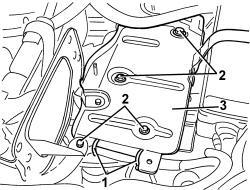

5530B52 BATTERY SUPPORT/DRIP TRAY - R.R
- Path
- Procedures > 55 ELECTRICAL EQUIPMENT > 5530 CURRENT GENERATION > 5530B BATTERY AND LEADS > 5530B52 BATTERY SUPPORT/DRIP TRAY - R.R
- Kind
- repair procedure (removal / refitting; the operation number is the code)
- Applies to
- all engines; all production periods
- Interactive page
- https://sloeber94.github.io/elrnDB-aBrrSpdr/en/#/946002377
Applies to: all engines; all production periods
 Removing
Removing
 Refitting
Refitting1. Cut the electrical wiring retaining bands.
2. Undo the bolts.
3. Remove the battery drip tray.

Applies to: all engines; all production periods
Refitting
Removing- Check that the battery drip tray is not damaged.
- Place the battery drip tray in its housing.
- Tighten the bolts.
Component | Fastening | dia | Value (daNm) | Validity |
|---|---|---|---|---|
BATTERY DRIP TRAY | Bolt | M8x22 | 1.9 ÷ 2.9 |
- Fit the retaining bands on the wiring.
Topics linked from this page (1)
Topics that link to this page (67)
- 0010T60 ELECTROHYDRAULIC SELECTION GEARBOX CLUTCH HYDRAULIC SYSTEM - BLEED AIR
- 0010T67 HYDRAULIC CLUTCH SYSTEM - BLEED AIR
- 1004B10 POWER UNIT WITH MANUAL GEARBOX - R.R
- 1004B14 POWER UNIT WITH AUTOMATIC TRANSMISSION R + R
- 1008A42 POWER UNIT RIGID SUPPORT - GEARBOX SIDE - R.R.
- 1008B30 GEARBOX SIDE SUPPORT FLEXIBLE MOUNTING(S) - REPLACE
- 1020D36 FLYWHEEL SIDE OIL SEAL - REPLACE FOR MANUAL GEARBOX WITH HYDRAULIC SELECTION VERSIONS
- 1020D38 FLYWHEEL SIDE OIL SEAL - REPLACE
- 1024B10 ENGINE FLYWHEEL - R + R FOR VERSIONS WITH MANUAL GEARBOX
- 1024B11 ENGINE FLYWHEEL - R.R. FOR MANUAL GEARBOX WITH HYDRAULIC SELECTION VERSIONS
- 1056F72 PRESSURE PUMP - R.R.
- 1056F79 FUEL PIPE (DUPLEX) FROM PRESSURE PUMP TO FUEL MANIFOLD - R.R.
- 1056F94 SYSTEM CABLE LOOM ON ENGINE - R.R.
- 1060G90 SYSTEM CABLE LOOM - R.R.
- 1072B21 AIR INTAKE FUEL MANIFOLD INTERGRATED DUCT R R AND REPLACE GASKET
- 1080C80 EXHAUST GAS/WATER HEAT EXCHANGER FOR EGR SYSTEM - R.R
- 1084C10 ENGINE OIL HEAT EXCHANGER - R + R
- 1088B20 ENGINE COOLING RADIATOR - R + R
- 1088C30 THERMOSTAT UNIT - R+R
- 1088C40 THERMOSTAT- R + R
- 1088D06 THREE-WAY CONNECTOR BETWEEN RADIATOR AND THERMOSTAT
- 1088D24 WATER PUMP RIGID COOLANT INLET PIPE - R.R.
- 1088D33 WATER PUMP FEED INTERMEDIATE PIPING - R R
- 1088E11 FANS WITH SINGLE ENGINE COOLING DUCT - R+R
- 1810A20 CLUTCH - R + R
- 1810A28 CLUTCH - R.R. FOR MANUAL GEARBOX WITH HYDRAULIC SELECTION VERSIONS
- 1820B30 CLUTCH HYDRAULIC ACTUATOR - R.R.
- 1820B36 THREE-WAY CONNECTOR ON CLUTCH SLAVE CYLINDER - R.R.
- 1820B45 RIGID DELIVERY PIPE FROM MASTER CYLINDER (PUMP) - R.R. FOR RIGHT HAND DRIVE VERSIONS
- 1820B48 SUPPLY HOSE TO OPERATING CYLINDER - R.R.
- 1820B56 RIGID PIPE FROM VIBRATION DAMPER TO SLAVE CYLINDER - R R
- 1820B58 CLUTCH HYDRAULIC CIRCUIT VIBRATION DAMPER - R+R
- 2110A10 MANUAL GEARBOX AND DIFFERENTIAL - R + R
- 2110A11 MANUAL GEARBOX WITH DIFFERENTIAL - R.R. FOR VERSIONS WITH HYDRAULIC SELECTION
- 2110C50 GEAR SELECTION AND ENGAGEMENT UNIT - R.R.
- 2125C30 GEAR ENGAGEMENT/SELECTION CABLES - R.R
- 2125C31 GEAR SELECTION/ENGAGEMENT CABLES REACTION BRACKET - R.R.
- 2130A42 WATER SUPPLY/RETURN PIPES TO HEAT EXCHANGER - R.R.
- 2130A45 RIGID PIPE FROM THERMOSTAT TO HEAT EXCHANGER - R.R.
- 2135A12 GEAR ENGAGEMENT CABLE - R R
- 2135B52 ELECTRONIC AUTOMATIC TRANSMISSION ELECTRIC CIRCUIT -ECU MOUNT - R.R.
- 2135B58 ELECTRONIC AUTOMATIC TRANSMISSION SYSTEM WIRING - R.R.
- 2127C10 SUPPORT FOR ELECTROHYDRAULIC CIRCUIT RESERVOIR AND SYSTEM PUMP - R.R.
- 2127C12 HYDRAULIC GEAR SELECTION FLUID RESERVOIR - R.R.
- 2127C20 PIPE FROM PUMP TO HYDRAULIC SPEED SELECTION ACTUATOR UNIT - R.R.
- 2127C22 PIPE FROM HYDRAULIC SPEED SELECTION ACTUATOR UNIT TO FLUID RESERVOIR - R.R.
- 2127C23 PIPE FROM MASTER CYLINDER TO THREE-WAY CONNECTOR FOR ELECTROHYDRAULIC SELECTION GEARBOX - R.R
- 2127C24 PIPE FROM SOLENOID VALVE ASSEMBLY TO MASTER CYLINDER FOR ELECTROHYDRAULIC SELECTION GEARBOX - R.R
- 2127C30 HYDRAULIC SPEED SELECTION SYSTEM PUMP - R.R.
- 2127C40 HYDRAULIC SPEED SELECTION HYDRAULIC ACTUATOR UNIT AND CLUTCH - R.R.
- 2127C44 PRESSURE ACCUMULATOR ON HYDRAULIC ACTUATOR UNIT - R.R.
- 2127C45 CLUTCH OPERATING CYLINDER, OF ELECTROHYDRAULIC SELECTION - R.R .
- 2127C52 ODD AND EVEN GEAR ENGAGEMENT SOLENOIDS - R.R.
- 2127C54 GEAR SELECTION SOLENOIDS - R.R.
- 2127C56 CLUTCH CONTROL SOLENOID - R.R.
- 2127E10 HYDRAULIC SPEED SELECTION SYSTEM CONTROL UNIT - R.R.
- 2127E44 HYDRAULIC SELECTION GEARBOX CLUTCH POSITION SENSOR - R.R.
- 2127E50 HYDRAULIC SELECTION GEARBOX CIRCUIT PRESSURE SENSOR - R.R.
- 2127E94 WIRING FOR MANUAL GEARBOX HYDRAULIC SELECTION SYSTEM ON HYDRAULIC SELECTION UNIT - R.R. OR REPLACE
- 3330D02 BRAKE SERVO/BRAKE PUMP ASSEMBLY - R.R.
- 3330D30 VACUUM UNIT - R+R
- 3330D28 VACUUM PIPE COMPLETE WITH SINGLE-ACTING VALVES - R.R.
- 3330D48 VACUUM SENSOR ON BRAKE SERVO - R.R.
- 3340A12 ABS HYDRAULIC AND ELECTRONIC CONTROL UNIT - R.R.
- 3340B52 RIGID PIPE (ONE) FROM MASTER CYLINDER (PUMP) TO A.B.S HYDRAULIC CONTROL UNIT - R.R.
- 4130B52 HEAT EXCHANGER PIPE - R+R
- 7025A28 BONNET LID OPENING CABLE - R R